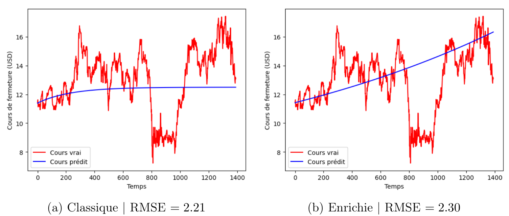

"Transfer Learning" en finance
Description du projet
Ce projet a été réalisé en binôme dans le cadre académique du projet de fin d'étude de Télécom SudParis. L'objectif de ce projet a été de comprendre le sujet du "transfer learning" (ou apprentissage par transfert) dans sa globalité. Puis, nous nous sommes concentrés sur l'article de Chen et al. Data enriched linear regression qui propose une régression linéaire modifiée pour le transfer learning de type instance-based (connaissance transférée au niveau des jeux de données). Pour définir simplement le transfer learning, on peut dire que c'est le principe de recycler la connaissance d'un domaine source vers un domaine cible. Dans notre cas d'application, le but a été d'utiliser le jeu de données du cours de l'action IBM (de 1962 à 2023) comme domaine source afin d'améliorer la prédiction du cours de l'action HPE (de 2015 à 2023) comme domaine cible. Ainsi, nous avons implémenté la méthode de régression linéaire TL (pour Transfer Learning) en Python afin d'améliorer la prédiction du cours HPE. Cela n'a pas amélioré la qualité des prédictions car la méthode de régression linéaire est trop simpliste pour décrire un processus stochastique. Ainsi, sur les conseils de notre tutrice, nous avons exploré la possibilité d'utiliser l'objet mathématique signature qui est souvent utilisé pour extraire des ensembles de caractéristiques essentielles des données. Par manque de temps, nous n'avons pas pu l'incorporer au modèle de prédiction mais la littérature scientifique semble encourageante à ce sujet. Le code est disponible sur GitHub à l'aide du lien ci-dessous.
Résultats
 Deux graphes correspondant aux tests des modèles de regréssion linéaire classique et enrichie. Ces deux modèles ont été entraînés sur le cours de fermeture de HP entre 2015-10-19 et 2017-01-01 (n=304 données). Le modèle enrichi a été entraîné en plus sur les données de l'entreprise IBM (de 1962-01-02 à 2017-01-01 :
N=13846 données). Les données ont été prétraitées avec un décalage L=10 dans le temps qui correspond donc au nombre de features (d=10). Le graphe (a)
correspond à la régression linéaire classique. Le graphe (b) correspond à la régression linéaire enrichie.